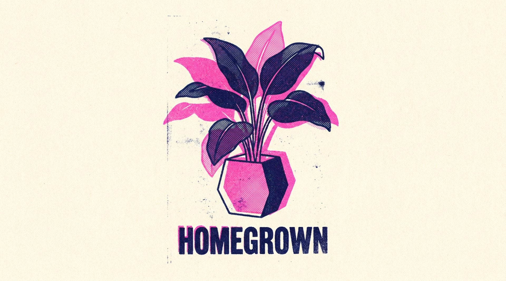

Issue 04 · risograph micro-press
Two inks.
Two inks.
One plate
at a time.
Every print here starts life as a single flat illustration and gets recolored live, ink pass by ink pass, the way a riso duplicator actually lays color: one drum, one hue, run through the machine again. Pick a set of inks below and watch the plate.
Hover the print for a registration wobble — the two plates never quite line up, on purpose.

01
Stock
Cream 120gsm uncoated, visible tooth under the halftone screen.
02
Screen
4px dot halftone, multiply blend, single pass per ink.
03
Registration
±1.5px hand-set wobble — a feature, not a flaw.
04
Run
Open edition, browser-native, unlimited reprints.
Back catalog
№01Static Bloom
№02Low Ink Day
№03Field Notes
№04Homegrown
№05Drum Test